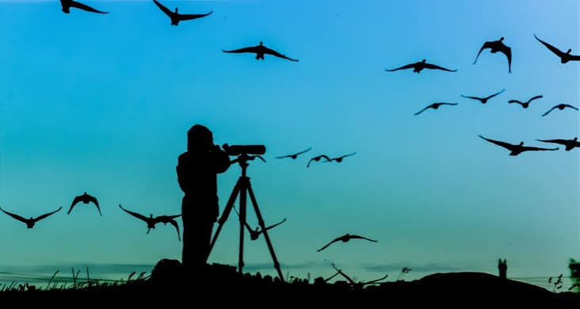
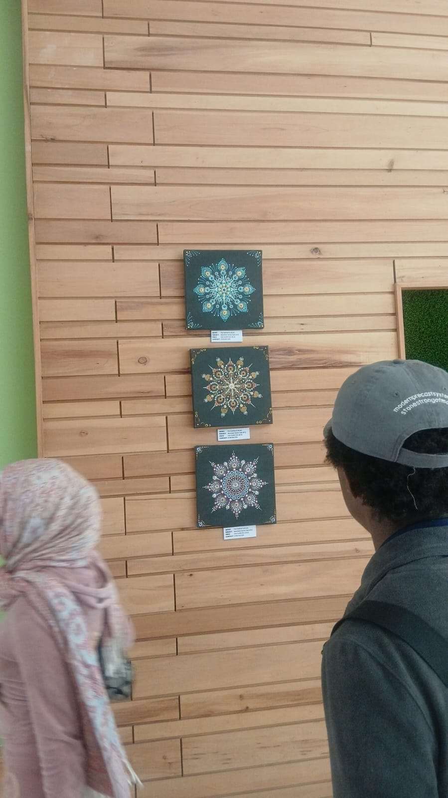
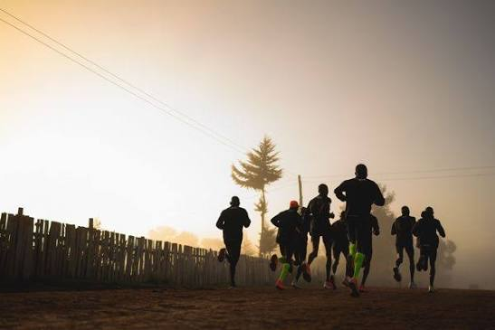
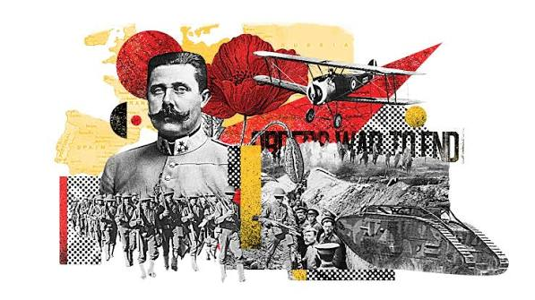

Bird Watching
Spotting and identifying local bird species sharpens my field observation skills and doubles as a great excuse to get outdoors early in the morning.
Hobby of the Month: Early-morning bird watching along green corridors and forest edges — skill rating: 7/10.

Spotting and identifying local bird species sharpens my field observation skills and doubles as a great excuse to get outdoors early in the morning.
Fast-paced rallies on the court are my favourite way to build agility, stay competitive, and reset after long coding or study sessions.

Exploring visual art, design, and diverse cultural traditions inspires creative problem-solving and connects nicely with learning new languages like Japanese.

Long distance runs help me clear my head, test endurance, and work through tough architectural problems without a screen in front of me.

Reading about industrial transitions, ancient infrastructure, and political turning points gives useful perspective on how modern systems evolve.